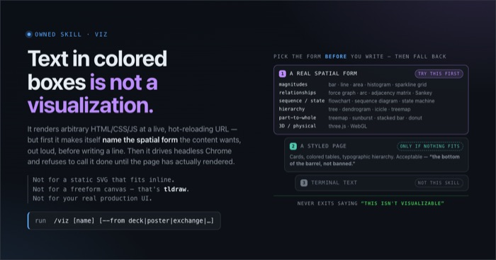
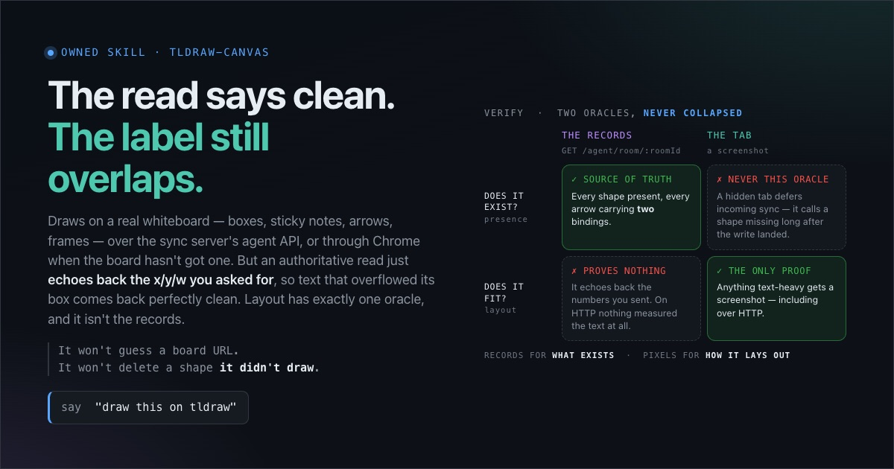
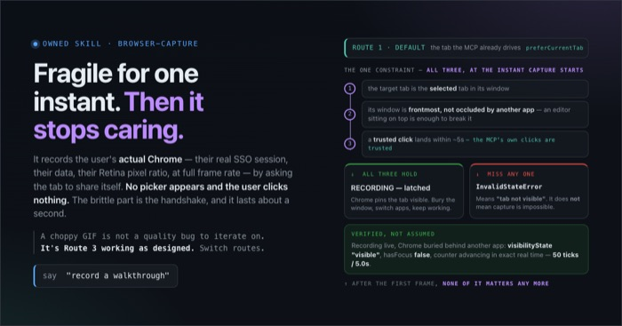
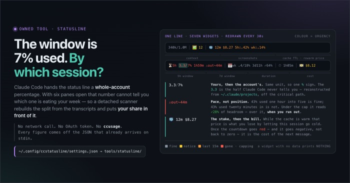
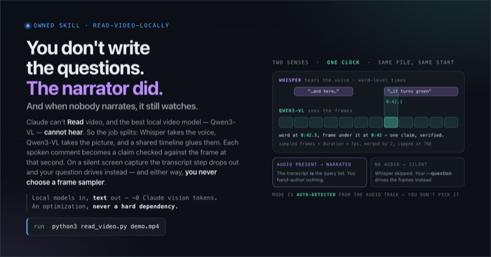

Every image Claude sees, right there in the transcript.
Screenshots, Reads, your pastes and show-image land as thumbnails under the tool call. Click one and the original fills the pane. Every image of the session waits in a gallery.
Not an image printed over the TUI. It is bound to text cells — kitty placeholders whose colour is the image id — so it survives repaints.
● It renders: the rank chart and the tab strip are drawn, and nothing overflows the card.
>
Opus 5.5 · 38k/1.0M🖼 5
gallery — a41f… — 6 images — page 1/1
1) viz-self-portrait.png

2) skill-viz.png

3) skill-tldraw-canvas.png

4) browser-capture.png

5) tool-statusline.png

6) read-video-locally.png
click or type # + enter · ]/[ page · a all sessions · q quit
↓ WHY IT EXISTS
The problem
Claude Code looks at images constantly — screenshots it takes, images you paste, files it reads — and the transcript shows you none of them. The obvious fix, printing the image to the terminal, does not survive contact with a full-screen TUI: two processes interleaving writes to one tty shred a large payload mid-escape, so it arrives as literal base64, and whatever does land is painted over on the next repaint.
What works is not fighting the TUI but handing it text. The hook uploads the image to Claude Code's tty in small, self-contained chunks, then returns a systemMessage of kitty Unicode placeholder cells that Claude Code prints like any other text. The picture is bound to those cells, so it scrolls and repaints with the transcript. Every image also lands in a per-session spool, and prefix+i in herdr opens it as a gallery.
What it catches
EVERY TOOL CALL
PostToolUse + UserPromptSubmit
↓
INLINE + GALLERY
images you paste
computer-use & Chrome shots
any image Claude Reads
show-image path · URL · clipboard
GALLERY ONLY
paths a tool was asked to act on — cpopenls
paths only in a tool's output — ignored, or one ls ~/Pictures floods it
↓
INLINE · UNDER THE TOOL CALL
thumbnail ≤ 40×12 cells, via systemMessage ctrl+click → the original, full-pane
↓
SPOOL · PER SESSION · prefix+i
~/.agents/state/ttyimgspool/<session-id>/ dedup by basename + byte size · keeps 100
Nothing to press, then two keys
Inline needs no key at all: a screenshot, an image Claude Reads, or one you paste shows up as a thumbnail right under the tool call, with a caption. Ctrl+click the image or its caption and the original file opens full-pane at full resolution; a click, a key or a scroll closes it. Name a borrowed link scheme once with ttyimgspool-link <scheme> and a plain click does the same.
To put any other image in front of you, say "show me …": the render-image-in-terminal skill has Claude run tools/ttyimgspool/show-image <path | URL | clipboard>, which normalises the source to a PNG and prints one show-image: <png> line for the hook to draw.
prefix+i opens the gallery on the current session's images, newest first, in a temporary pane that closes when you leave it.
# gallery
click open that thumbnail
1…9 then Enter open image N (type the whole number; nothing fires until Enter)
Backspace / Esc correct or cancel the number
] [ next / previous page
a toggle this session ⇄ all sessions
q quit
# single image
n p older / newer
g or click back to the gallery
d delete this image
C delete all (confirms)
Numbering is global: image 36 is 36) on page 2, not 1).
The status line
🖼 8 — how many images this session has. It turns yellow when something landed in the last two minutes, and disappears entirely when the session has none. It matters most for the gallery-only images: a path a tool merely touched never shows inline, so the widget is what tells you there is something behind prefix+i.
What it doesn't do
Inline needs a kitty-graphics terminal — Ghostty, kitty, WezTerm; under herdr, kitty_graphics = true. Anywhere else the hook stays silent. A phone attached to the same herdr session can't be detected, and shows the placeholder cells as junk.
A plain click needs a borrowed scheme. Claude Code takes a plain click and only opens a hard-coded allowlist of schemes; a file:// link becomes a Finder reveal (open -R) — anthropics/claude-code#95675, as of 2.1.283. Ctrl+click reaches herdr regardless. For a plain click, ttyimgspool-link <scheme> points the links at an allowlisted scheme you don't use (you name it; there is no default), and ~/Applications/TtyImgLink.app opens the viewer and forwards any other link on that scheme to its real owner. macOS only; ttyimgspool-link off goes back to Ctrl+click.
Inline images are thumbnails, at most 40×12 cells. The full-pane view is only as sharp as the image Claude received: a screenshot taken at reduced scale stays soft.
Paths a command merely mentions stay gallery-only.cp, open and ls are not Claude looking at an image.
herdr only for the keybinding, session scoping and the Ctrl+click viewer. The gallery itself is plain bash plus chafa and runs anywhere — you just launch it yourself, and lose scoping.
A copied or pasted file under 2 KB is dropped on the floor.MIN_BYTES exists to keep icons and spacers out of a gallery slot, and it will happily discard a genuinely tiny screenshot along with them.
At most five images per tool call.MAX_PER_CALL caps a single burst; a run that emits forty frames gets the first five.
Where it lives
Integrates with
Claude Code PostToolUse and UserPromptSubmit (both registered in settings/claude-code/settings.json); herdr for prefix+i and the Ctrl+click plugin (rascaltwo.ttyimgspool); the statusline widget for the image count.
Requires
herdr and chafa, plus a terminal that speaks the kitty graphics protocol (Ghostty, kitty, WezTerm). Without chafa the hook still spools — only the viewer goes blank.
Its state
~/.agents/state/ttyimgspool/<session-id>/ — one directory per session, the copied images, and a .hook.log that only gets a line when something was actually saved, and a .clicked file holding the last Ctrl+clicked path.
Safe to delete?
Yes — deletion-policy: delete. rm -rf ~/.agents/state/ttyimgspool costs you the gallery's back catalogue and nothing else; the originals were never moved, only copied.
Not its state
/tmp/claude-<uid>/<launch dir>/<session-id>/images/ (Claude Code 2.1.283; ~/.claude/image-cache/<session>/ before that) belongs to Claude Code — that is where a pasted image lands, and the hook only ever reads it.
The pieces
ttyimgspool-hook.py (capture and inline drawing), ttyimgspool (the gallery) and show-image, all reached through the ~/.agents/ai-setup pointer at ~/.agents/ai-setup/tools/ttyimgspool/ — none is linked individually. The Ctrl+click viewer is herdr-plugin/, which install.ts links with herdr plugin link.
Config
TTYIMGSPOOL_DIR (default ~/.agents/state/ttyimgspool), TTYIMGSPOOL_KEEP (100 images per session), TTYIMGSPOOL_DAYS (30; 0 disables the sweep).
Install
bun install.ts # installs chafa, merges the keybinding, links the herdr plugin
herdr server stop # then reattach
The restart is not optional the first time. The gallery and the inline thumbnails both depend on herdr's experimental.kitty_graphics (set by settings/herdr/config-prefs.toml), and that setting only takes effect on a full server restart.
From a tool call to pixels in your pane
One screenshot, from the hook firing to a thumbnail in the transcript, a full-pane view and the gallery. Eight steps — arrow keys work, or drive it with the buttons.
← → arrow keys
The hook runs on every tool call, so it refuses to parse most of them
PostToolUse fires after every tool call — a Read, a Grep, forty Bash invocations in a row. So main() in ttyimgspool-hook.py reads stdin as a string and runs the SNIFF regex (line 33) over the raw text before anything else: an image extension, or "type": "image" — plus a check for a show-image: line. No match and it returns without ever calling json.loads. The common case therefore costs one Python interpreter startup and a regex scan, which is the only reason a hook this broad is affordable.
The whole of main() sits inside a try/except at line 381 that swallows everything into .hook.log. A hook that raises is a traceback in the middle of your work; a hook that silently misses one screenshot is a screenshot you go and find yourself.
What gets captured, and the asymmetry that makes it usable
Two harvesters run over the parsed payload, and the difference between them is the whole capture rule.
collect_b64() walks bothtool_input and tool_response at any nesting depth, looking for Anthropic image content blocks — {"type":"image","source":{"data":…}}. Those are images the model genuinely looked at, wherever they appear.
collect_paths() is called on tool_inputonly (line 168). Its docstring says why in one sentence: walking tool_response too would scoop up every image path a Grep or an ls happened to print. So a path is spooled when a tool was asked to act on it and ignored when it merely showed up in the output.
PATH_RE (line 35) matches within a string rather than against it, because an image path is usually embedded in a larger value — the Bash command open /tmp/shot.png is one string, and the path is in the middle of it. Each hit is expanduser'd, file:// is stripped, and it has to survive os.path.isfile before it counts.
Writing the spool: three guards and a filename
Survivors are written into ~/.agents/state/ttyimgspool/<session>/ as <YYYYmmdd-HHMMSS>-<tool>-<basename>, so the directory sorts by time and the tool that produced each image is visible in its name. Three things can stop a write:
MIN_BYTES (2048). Icons and spacers are not worth a gallery slot.
MAX_PER_CALL (5). One run of a gif builder can emit dozens of frames.
already_spooled(). Same basename, same byte count, already there → skip. Without it, every ls or open that mentions a file re-copies it and the gallery fills with one screenshot forty times. A path whose directory is the spool is skipped outright (line 136) so the tool cannot copy its own output back onto itself.
Pasted images take the other entry point. UserPromptSubmit skips the sniff entirely and runs do_prompt(). paste_dir() finds where Claude Code wrote them — /tmp/claude-<uid>/<launch dir>/<session-id>/images/ as of 2.1.283, ~/.claude/image-cache/<session>/ before — by globbing on the session id alone, because the launch dir is not the payload's cwd (that follows cd). They are copied in as paste-N.png, so existence at the destination is the dedup: the hook re-runs every turn, copies nothing old, and draws only the new ones.
Which images are drawn inline
do_tool() returns a second list alongside the spooled count: the paths to draw. It is deliberately narrower than what gets spooled — only images Claude actually saw. Base64 image blocks go in. A path goes in only when the tool is Read and no base64 came back with it. And SHOW_RE (line 37) pulls show-image: <png> lines out of the tool response, which is the whole contract with the show-image script: it converts a path, URL or clipboard image to PNG with sips, prints that one line, and the hook does the rest. A cp or open is spooled and never drawn.
Drawing inline without fighting the TUI
show_inline() first asks can_draw(): TERM_PROGRAM is Ghostty or WezTerm, or TERM says kitty, and under herdr the config must carry kitty_graphics = true. Otherwise it returns having printed nothing. claude_tty() walks up the parent processes with ps to the first one that owns a tty — Claude Code's terminal — and opens it write-only.
draw() then does two things. It uploads the image (sips to PNG, capped at 1600px) as kitty a=t,f=100 transmissions in 3072-byte base64 chunks, each a complete APC escape, so Claude Code's own writes can land between chunks but never inside one; q=2 keeps the terminal from replying into the prompt. A final a=p,U=1 creates a virtual placement sized by grid() — at most MAX_COLS 40 by MAX_ROWS 12 cells (line 30), keeping aspect ratio. And it returns text: one line per row of U+10EEEE placeholder characters, the first carrying a row and a column diacritic, all in a 24-bit foreground colour whose RGB is the random image id. Each row and the caption (computer · 1456×816 · ctrl+click to enlarge) are wrapped in an OSC 8 file:// link to the spooled copy. The hook prints them as {"systemMessage": …}, Claude Code passes that ANSI through untouched, and the terminal paints the image wherever those cells are — through every repaint and scroll.
Ctrl+click: the herdr plugin
herdr-plugin/herdr-plugin.toml (id rascaltwo.ttyimgspool) declares a link_handlers entry matching file:// URLs that end in an image extension. herdr routes a Ctrl+click on such a link to the open action, which runs view open: it writes HERDR_PLUGIN_CLICKED_URL into .clicked in the spool and opens the plugin's viewer overlay pane. That pane sends the original file as a kitty PNG and lets the terminal scale it to fit — chafa's re-rasterised output was too blocky to read text in — then turns on mouse reporting so a click arrives as input, and exits on the first byte of a click, key or scroll.
Which session is "this" session
Both ends resolve the folder name the same way and never talk to each other. session_name() in the hook and lines 18–21 of the viewer each read a pane id from the environment — HERDR_PANE_ID for the hook, HERDR_ACTIVE_PANE_ID for the keybinding — shell out to herdr pane get, and pull agent_session out of the JSON with a regex. Two independent derivations of one fact, which agree because they derive it from the same place.
Claude Code's own session_id is deliberately the fallback, not the source. A session running as a background job reports the job id there, so the hook would write into one folder and the viewer would read from another.
If the resolved session has no images, the viewer flips scope to ALL and reloads (line 113) rather than showing an empty screen. a toggles back.
The viewer prunes on open, then repaints as little as it can
Opening the gallery is also the tool's only garbage collection. prune() trims the current session to TTYIMGSPOOL_KEEP newest. That alone lets an abandoned session keep its images forever, because KEEP only ever touches the session you are looking at — which is how this spool reached 193 session directories and half a gigabyte before anyone went looking. So a second sweep rm -rfs whole session directories that have had nothing spooled into them for TTYIMGSPOOL_DAYS (default 30, 0 disables it), excluding the current one. A directory's mtime moves on write and not on read, which is what makes it an honest proxy for "I am done with that session".
TTYIMGSPOOL_DIR still overrides where all of this happens; it just defaults to ~/.agents/state/ttyimgspool now rather than into ~/.claude/. The hook, the viewer and the statusline widget each read that variable independently, so moving the spool moves all three.
Drawing is chafa -f kitty — --size 22x8 per thumbnail in the grid, --scale max for a single image. Every thumbnail is a kitty graphics payload, so retransmitting the grid on each keystroke would be visibly slow. The main loop instead keeps a dirty flag: the footer is drawn separately on every key, and gallery() only re-runs when the page, scope or image list actually changed. trap 'dirty=1' WINCH makes a terminal resize the one external event that forces a redraw.